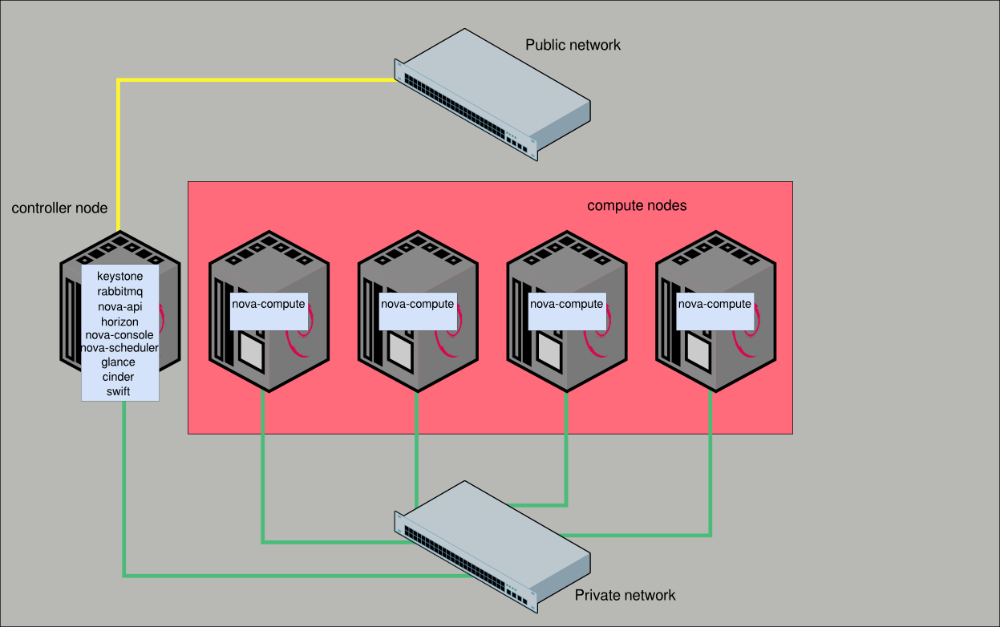
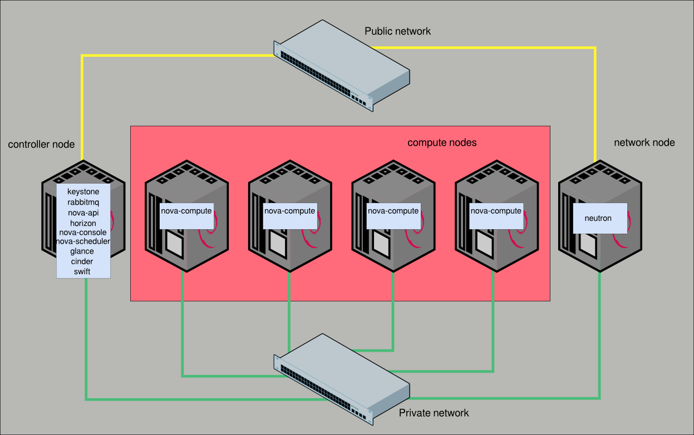
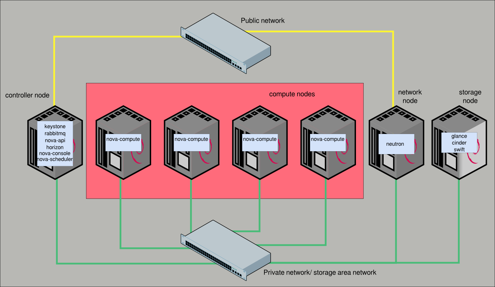

¿Rack o torre?
- La forma de los equipos de torre los hace muy ineficaces desde el punto de vista de la circulación de aire
- Los servidores en rack están optimizados para la refrigeración por aire
- Hay que considerar la eficiencia de la(s) fuente(s) de alimentación
- ¿Tenemos armario de servidores?
- Habitualmente los servidores torre consumen más que los equivalentes en rack
Construyendo una nube ...
1 nodo
- Supongamos que vamos a empezar por una nube con un solo
nodo
- Ese nodo deberá ser nodo controlador + red + computación +
almacenamiento
- Puede ser adecuado para un centro educativo con pocos
recursos, para pruebas o para empezar
- ¿Nube de aula?
Ejemplo 1: Supermicro 5018D-MF
- Intel Xeon Processor E3-1220 v3 3.10GHz (4 cores)
- 32 GiB de RAM DDR3
- 2 HD SATA 500 GiB
- Precio estimado: 1400 $
Adecuado como nodo único o nodo controlador
Precios obtenido de thinkmate.com
Ejemplo 2: Supermicro 6017B-URF
- Intel® Xeon® Processor E5-2403 v2 1.80GHz (4 cores/8
hilos)
- 96 GiB de RAM registrada DDR3
- 2 HD SATA 1 TiB
- Precio estimado: 2840 $
Adecuado como nodo único o nodo de computación
Precio obtenido de thinkmate.com
Ejemplo 3: Dell r220
- AMD Opteron 4334, 6C, 3.1GHz (6 cores)
- 8 GiB de RAM registrada DDR3
- 2 HD SATA 1 TiB
- Precio estimado: 1000 €
Adecuado como nodo controlador o de red
Precio obtenido de dell.es
Ejemplo 4: Dell r730
- Intel® Xeon® E5-2609 v3 1.9GHz (6 cores/12 hilos)
- 128 GiB de RAM registrada DDR3
- 1 HD SATA 1 TiB
- Precio estimado: 3400 €
Adecuado como nodo único o nodo de computación
Precio obtenido de dell.es
2 o 3 nodos
- Primera ampliación sobre el anterior
- 1 nodo controlador + red + almacenamiento
- 1 o 2 nodos de computación
- 1 servidor convencional para controlador y 1 ó 2 servidores
potentes para los nodos de computación
1 Controlador + n Computación

Entre 4 y 6 nodos
- 1 nodo controlador + almacenamiento
- 1 nodo de red
- Entre 2 y 4 nodos de computación
1 Controlador + 1 Red + n Computación

1 Controlador + 1 Red + n Computación + Almacenamiento

Alta disponibilidad
- Eliminación de SPOF:
- Duplicación de los nodos de red y controlador
- Duplicación de los dispositivos de red
- Servicios Stateless o Stateful
- Inclusión de pacemaker y corosync
- Almacenamiento distribuido
- Migración en vivo de instancias